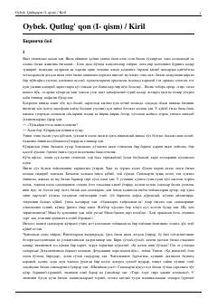

QQYo'lchining o'z taqdirini izlab, boy tog'asi Mirzakarimboy xonadoniga kelishi haqidagi tarixiy roman.
Ushbu asar XX asr boshlaridagi o'zbek xalqining hayoti, ijtimoiy tengsizlik va qishloq muhitidagi o'zgarishlarni tasvirlaydi. Asar bosh qahramoni Yo'lchi o'z taqdirini izlab, boy tog'asi Mirzakarimboyning xonadoniga kelishi bilan voqealar rivojlanadi.